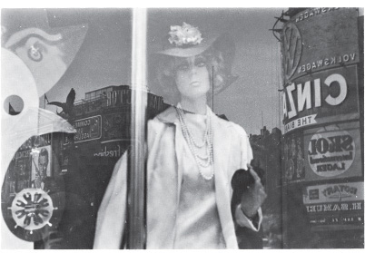
Yaşadığımız kentlerde hepimiz her gün yüzlerce reklam imgesi görürüz. Karşımıza bu denli sık çıkan başka hiç bir imge yoktur.
Tarihte başka hiç bir toplum böylesine kalabalık bir imgeler yığını, böylesine yoğun bir mesaj yağmuru görmemiştir.
İnsan bu mesajları aklında tutabilir ya da unutabilir; ama gene de okumadan görmeden edemez. Bir an için de olsa bu mesajlar belleğimizi imgeleme, anımsama ya da beklentiler yoluyla uyarırlar. Reklam imgesi anlıktır. Onu bir sayfayı çevirirken, bir köşeyi dönerken, yanımızdan bir araç hızla geçerken görüveririz. Tecimsel reklamların bitmesini beklerken televizyon perdesinde çarpar gözümüze. Hiç durmadan yenilenip durmaları, zamana uydurulmaları bakımından da anlıktır reklam imgeleri. Oysa hiç bir zaman o anda söz edilmez reklamlarda. Çoğu zaman geçmişten, her zaman da gelecekten söz edilir.
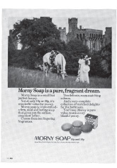
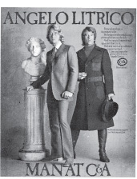
Bu imgelerin bize seslenip durmasına öylesine alışmışızdır ki üzerimizde yaptıkları etkinin tümüne pek dikkat etmeyiz. Belli bir imge ya da mesaj içimizden birinin dikkatini bugünlük çekebilir çünkü o kişi o özel şeye ilgi duymaktadır. Oysa hepimiz reklam imgelerinin tümünü bir iklim özelliği gibi doğal kabul ederiz. Örneğin bu imgelerin içinde yaşadığımız ana bağlı olmaları, buna karşılık gelecekten söz etmeleri üzerimizde, çok alıştığımız bu yüzden de dikkat etmediğimiz garip bir etki yaratır. Çoğunlukla —yürürken, yolculuk ederken, bir sayfayı çevirirken— imgenin önünden geçen bizizdir aslında. Televizyon perdesinde durum biraz değişiktir; o zaman bile imgeyi görmemek bizim elimizdedir —reklama bakmayız, sesi kısarız ya da mutfağa kahve pişirmeye gideriz. Bütün bunlara karşın reklam imgeleri uzak bir istasyona doğru koşan hızlı trenler gibi durmaksızın önümüzden geçiyormuş izlenimi bırakır. Biz dururuz; onlar hareket eder —gazete atılıncaya, televizyon programı bitinceye ya da reklam afişinin üstüne yenisi yapıştırılıncaya dek böylece sürer gider bu.
Reklamların, çoğu zaman, halka (alıcıya), becerikli yapımcılara —ve böylelikle ulusal ekonomiye— yararlı bir yarışma aracı olduğu savunulur. Özgürlükle çok yakından ilgili bir savdır bu: alıcının seçme özgürlüğü, üreticinin girişim özgürlüğü gibi özgürlüklerle. Anamalcılığın egemen olduğu kentlerde tüketim maddelerinin oluşturduğu büyük yığınlar ve reklam ışıkları, Özgür Dünya’nın sunduğu hemen göze çarpan görsel imgelerdir.
Doğu Avrupalılar’ın birçokları için Batı’daki bu imgeler Doğu’da onların sahibolamadıkları şeyleri özetler gibidir. Reklamın insanlara özgür seçme hakkı verdiği sanılır.
Reklamlarda bir tür ürünün, bir firmanın öbürüyle yarıştığı doğrudur; ne var ki her reklam imgesinin öbürünü güçlendirdiği, hızlandırdığı da doğrudur. Reklamlar yalnızca birbiriyle yarışan bir mesajlar topluluğu değildir. Reklam, hep o aynı hiç değişmeyen o genel öneriyi yapmak için kendi başına kullanılan bir dildir. Reklamlarda şu kremle bu krem, şu arabayla bu araba arasında bir seçme yapmaya çağrılırız; oysa dizgesel olarak ele alındıklarında reklamlar bir tek şeyi önerir her zaman.
Reklamlarla her birimize bir nesne daha satın alarak kendimizi ya da yaşamlarımızı değiştirmemiz önerilir.
Aldığınız bu yeni nesne der reklam, sizi bir bakıma daha zenginleştirecektir —aslında o nesneyi almak için para harcayarak biraz daha yoksullaşacak olsanız bile!
Reklam, yüzeysel görünüşü değişmiş, bunun sonucu olarak kıskanılacak duruma gelmiş insanları göstererek bizi bu değişikliğe inandırmaya çalışır. Kıskanılacak durumda olmak, çekici olmak demektir. Reklamcılık çekicilik üretme sürecidir.
Burada reklamın kendisini, reklamı yapılan nesnenin bize getireceği zevk ya da yararla birbirine karıştırmamak gerekir. Reklamın yarattığı etki gerçeğe yaslanmasındandır. Giysiler, şampuanlar, arabalar, güzelleştirici boya ve kremler, güneşli tatil yerleri gerçekten zevk alınacak şeylerdir. Reklam, içimizde yatan doğal bir zevk açlığını işleyerek girişir işe. Ne var ki gerçek zevk nesnesinin aslını sunamaz bize: o zevkin aynı olan, o zevkin yerini tutabilecek ölçüde doyurucu başka bir şey yoktur. Reklam ılık, uzak bir denizde yüzmenin zevkini ne denli inandırıcı gösterirse, seyirci-alıcı, o denizden kilometrelerce uzak olduğunun o denli bilincine varacak, o denizde yüzme olanağının o denli az olduğunu anlayacaktır. İşte bunun içindir ki reklam, alıcıya sunduğu ürün ya da olanağı gerçekten gösteremez; alıcı da daha tatmamış olmalıdır bunları. Reklam hiçbir zaman bilinen bir zevkin alıcıya yeniden tattırılması olamaz. Reklam hep gelecekteki alıcıya seslenmek zorundadır. Alıcıya satmaya çalıştığı ürünle ya da olanakla çekicilik kazanmış olan kendi imgesini yansıtır. Bu imgeyle alıcıda, kendisinin gelecekte olabileceği durumu özleten bir kıskançlık uyandırır. Bu kıskanılası Ben’i yaratan nedir öyleyse? Başkalarının duyduğu kıskançlıktır elbette. Reklam nesneleri değil toplumsal ilişkileri amaçlar. Reklam, zevk değil mutluluk vadeder bize: dışardan, başkalarının gözüyle görülen bir mutluluk. Kıskanılmanın getirdiği bu mutluluk da çekicilik yaratır.
Kıskanılmaksa insanda, ancak yalnız başına tadılabilecek bir kendine güven duygusu yaratır. Bu duygu da yaşantınızı, sizi kıskananlarla paylaşmamanızdan gelir. İnsanlar size ilgiyle bakarlar, oysa siz onlara öyle bakmazsınız —bakacak olursanız o denli kıskanmazlar ki sizi! Bu bakımdan, kıskanılanlar bürokratlara benzerler; ne ölçüde kişiliksiz olurlarsa (hem kendilerinin hem de başkalarının gözünde) o denli büyüyecektir güçlülükleri, aldatmacaları onların. Gerçek olmayan bu mutluluklarında çekiciliğin gücü ‘yatar’: bürokratın aslında olmayan, varsayılan yetkesinde yatan gücüdür bu. Çekicilik imgelerinin çoğunda görülen boş, belli bir yere yönelmemiş bakışlar başka türlü açıklanamaz. Bu imgelerdeki insanlar yaşamalarını sağlayan bu kıskanç bakışlara görmemezlikten gelerek bakarlar.
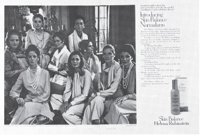
Seyirci alıcının, ürünü edindiği zaman erişeceği durumuna bakarak kendini kıskanması beklenir. O ürünle, başkalarının kıskanacağı bir nesne durumuna dönüştüğünü düşünmesi amaçlanır. Bu kıskançlık, onda kendini beğenme duygusunu güçlendirecektir. Bunu başka türlü de anlatabiliriz: reklam imgesi alıcıdan, aslında onun kendisine karşı duyduğu sevgiyi çalar; sonra da bu sevgiyi ona, alacağı ürünün fiatına yeniden satar.
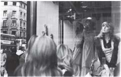
Reklam dilinin fotoğraf makinasının bulunmasına dek geçen zaman içinde yağlıboya resimde Avrupa’da dört yüzyıl boyunca egemen olan dille ortak bir yanı var mıdır?
Yanıtı apaçık ortada duran bir sorudur bu. Kesintisiz bir süreklilik söz konusudur bu alanda. Ne var ki bu süreklilik ekinsel endişelerle biraz gölgelenmiştir. Sürekliliğin yanında çok büyük bir ayrım da sözkonusudur. Bu ayrım ayrıca incelenmeye değecek ölçüde önemlidir.
Reklamlarda eski sanat yapıtlarına uzanan çizgiler görülür. Bazan reklam imgesinin tümü çok ünlü bir resmin açık bir benzeridir.
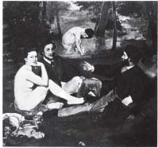
KIRDA KAHVALTI, MANET 1832–1883
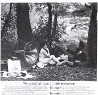
Reklam imgelerinde, mesaja çekicilik ya da güçlülük katmak amacıyla yontu ya da resimler kullanılır. Vitrinlerde sergilenen nesnelerin yanına çoğu zaman çerçeveli resimler asılır.
Reklamlara ‘alınan’ her sanat yapıtı, iki işi bir arada görür. Sanat bir zenginlik simgesidir; güzel yaşam demektir: Dünyanın zenginlere, güzellere sunduğu değerli nesnelerinin bir parçasıdır.
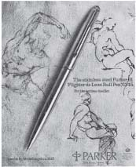
Oysa sanat yapıtları ekinsel üstünlüğü bir tür soyluluğu, giderek bir tür akıllığı da düşündürür. Bunlar, sıradan nesnelerden üstündür. Yağlıboya resim ekinsel kalıtın bir parçasıdır, ince zevkleri olan bir Avrupalı olduğunuzu size anımsatan bir şeydir. Böylece reklamın içine konan (bu yüzden de reklamın çok işine yarayan) sanat yapıtı birbirleriyle çelişen iki şeyi aynı anda söyler bize: Zenginlik ve üstünlük gösteren o reklam ürününün hem lüks, hem de ekinsel değer taşıyan bir şey olduğu imlenmiş olur. Aslında reklamcılar yağlıboya resim geleneğini, sanat tarihçilerinin çoğundan daha iyi anlamışlardır. Sanat yapıtıyla, seyirci sahip arasındaki ilişkilerin niteliğini kavramışlar, bu ilişkileri seyirci alıcıyı kandırmakta, onun gururunu okşamakta kullanmışardır.
Gene de yağlıboya resim geleneğinden reklamlara bu yolla geçiş, bazı resimlerin ‘alıntı olarak’ kullanılmasından daha da derinlere işlemiştir. Reklamlarda da büyük ölçüde yağlıboya resim dili kullanılır. Aynı şeylerden aynı dille söz edilir. Bazan görsel benzerlikler öylesine yakındır ki insan ‘Tıpatıp!’ diye bağırabilir —eş imgeler ya da ayrıntılar neredeyse aynıyla yanyana konmuştur.
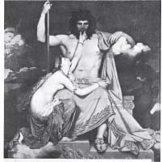
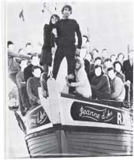
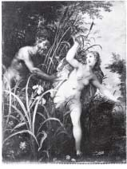
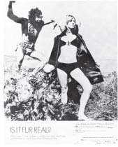
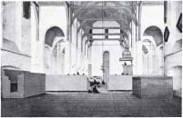
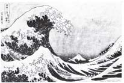
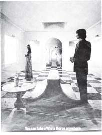

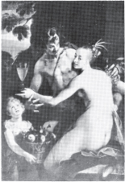
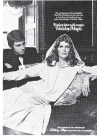
Ne var ki bu yalnızca resimsel imgelerin etkisi açısından değil, kullanılan imgeler dizisi açısından da önemlidir.
Bu kitapta verilen reklam imgeleriyle yağlıboya resimdeki imgeleri karşılaştırın; elinize resimli bir dergi alın ya da, vitrinlerde sergilenen nesneleri seyrederek pahalı dükkânların bulunduğu bir caddeden geçin. Sonra da resimli bir müze kataloğunu karıştırın. Bunların her ikisinde de mesajların nasıl benzer yollarla verildiğine bakın. İyiden iyiye incelenmesi gereken bir konudur bu. Biz burada yalnızca bu benzerliğin araçlarla amaçlarda çok çarpıcı bir biçimde ortaya çıktığını bir kaç alandan söz etmekle yetinebiliriz ancak.
Modellerle (mankenlerle) mitoloji kişilerinin hareketlerindeki benzerlik.
Saflığın yeniden kazanılabileceği bir yer yaratmak amacıyla doğanın (yapraklar, ağaçlar, su) romantik bir biçimde kullanılışı.
Akdenizin sıcak, özlem uyandıran çekiciliği.
Kalıplaşmış kadın tiplerini gösteren pozlar: Dingin anne (madonna), uçarı sekreter (kadın oyuncu, kralın metresi), kusursuz evsahibesi (seyirci sahibin karısı), cinsel nesne (Venüs, ürken su perisi), vb.
Kadın bacaklarının cinsellik açısından özellikle vurgulanması.
Lüks kullanım özelliği taşıyan malzemeler: oyma madenler, kürkler, maroken, vb.
Sevgililerin, seyirci düşünülerek önden verilmiş kucaklaşmaları.
Yepyeni bir yaşam sunan deniz.
Erkeklerin, zenginliği ve güçlülüğü gösterecek biçimde duruşları.
Uzaklığın — gizemlilik yaratacak biçimde— perspektifle verilmesi.
İçmenin başarıyla eşitlenmesi.
Şövalyenin (atlının) araba sürücüsüne dönüşmesi.
Reklamlarda yağlıboya resim dilinin görsel anlatımına neden bu denli çok başvuruluyor?
Reklam tüketici toplumun yarattığı ekindir. Toplum böylece kendine olan inancını imgeler yoluyla çoğaltarak sürdürür. Bu imgelerde yağlıboya dilinin kullanılmasının bir çok nedeni vardır.
Yağlıboya resim her şeyden önce özel mülke sahibolmanın sevincini yansıtıyordu. Bir sanat türü olarak yağlıboya resim, neyin varsa sen osun ilkesinden yola çıkmıştı.
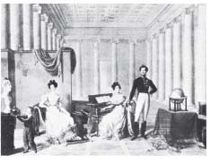
KARISI, KIZKARDEŞİ VE GELECEKTEKİ PARMA'NUN III. CARLO'SUYLA BİRLİKTE CARLO LODOVICO DI BORBONE, İMZASIZ, 19. YÜZYIL
Reklamı, Yenidendoğuş sonrası Avrupa görsel sanatının devamı olarak düşünmek yanlıştır; o sanat türünün can çekişmesidir reklam.
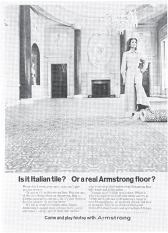
Reklam özünde özlem uyandırıcı bir şeydir. Geçmişi geleceğe satmaktır görevi. Kendi söylediklerinin ölçüsünü kendisi tutturamaz. Bu yüzden nitelikle ilgili her reklam ister istemez geriye dönüşlüdür, gelenekseldir. Bütünüyle çağdaş bir dil kullanacak olsa, reklam hem kendine güvenini, hem de inandırıcılığını yitirir.
Sıradan seyirci alıcının geleneksel eğitimini kendi çıkarına kullanması gerekir reklamın. Seyirci alıcının okulda tarih, mitoloji, şiir olarak öğrendikleri, çekicilik üretiminde kullanılabilir. Purolar bir kral adıyla, iç çamaşırları Sfenks’le ilgi kurularak, yeni bir araba yazlık bir konağın önüne yakıştırılarak satılabilir.
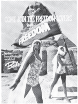
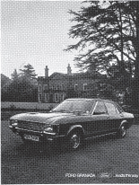
Bu belli belirsiz tarihsel, şiirsel ya da ahlâksal imlere yağlıboya resim dilinde her zaman raslanır. Bunların belirsiz, giderek anlamdan yoksun oluşları belli bir yarara dönüktür; anlaşılır olmamalıdır bu imgeler; aslında yalnızca yarım yamalak öğrenilmiş olan ekinsel dersleri anımsatmalıdır. Reklamcılık, tüm tarihi mitolojiye dönüştürür; ne var ki bunu, etkili bir biçimde yapabilmek için tarihsel boyutları olan görsel bir dil kullanmak zorunda kalır.
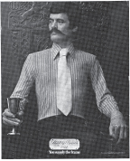
Son zamanlarda geliştirilen bir teknikle yağlıboya resim dilini reklam klişelerine çevirmek kolaylaşmıştır. Bu teknik gelişme, on beş yıl kadar önce ucuz renkli fotoğrafın bulunmasıdır. Belli nesnelerin rengi, dokusu, canlılığı resme geçirilebilir olmuştur böylece. Seyirci sahip için yağlıboya resim neyse, seyirci alıcı için de renkli fotoğraf aynı şeydir. Bunların ikisinde de imgelerdeki gerçek nesneyi ele geçirebileceği duygusunu alıcıya vermek için büyük ölçüde dokunabilirlik yaratma yoluna başvurulur. Her iki durumda da alıcıda uyanan bu, imgelere neredeyse dokunuverecekmiş duygusu, ona gerçek nesneyi ele geçirebileceğini ya da gerçekten ele geçirdiğini düşündürür.
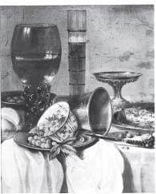
İÇKİ KADEHLERİYLE ÖLÜ DOĞA, CLASEZ 1596/7-1661
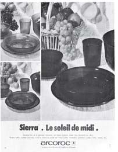
Anlatım dilinin böyle kesintisiz sürmesine karşın reklamın işlevi gene de yağlıboya resmin işlevinden çok başkadır. Seyirci alıcı dünyayla, seyirci sahibinkinden çok değişik bir ilişki içindedir.
Yağlıboya resim sahibin mülkleri arasında, onun yaşamı içinde, zaten tadını çıkarmakta olduğu nesneleri gösteriyordu. O sahibin bir insan olarak değerli olduğu duygusunu doğruluyordu. Zaten içinde bulunduğu durumda kendi gözünde kendi imgesini güçlendiriyordu. Gerçeklerden, onun yaşamının gerçeklerinden yola çıkıyordu. Sonra, sahibin gerçekten içinde yaşadığı yapıların iç duvarlarını süslüyordu bu resimler.
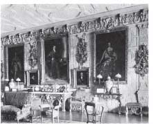
Reklamın amacıysa, seyircide içinde bulunduğu yaşamdan bir ölçüde, memnun olmadığı duygusunu kamçılamaktır. Toplumun yaşamında değil, kendi özel yaşamında bir eksiklik duymalıdır seyirci. Reklam seyirciye, sunulan nesneyi aldığında yaşamın daha iyi olacağını söyler; ona içinde bulunduğu yaşamdan daha iyi bir yaşam önerir.
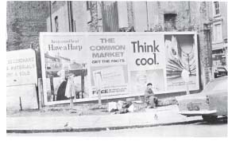
Yağlıboya resim pazardan para kazananlara satılmak amacıyla yapılıyordu. Reklamlarsa (önce işçi, sonra da alıcı olarak) pazarı oluşturan insanların sırtından iki kat kâr sağlayan, aynı zamanda tüketici üretici de olan seyirci alıcıya yöneltilmiştir. Reklamların pek girmediği yerler yalnızca çok zenginlerin çevreleridir; onlar da zaten paralarını kendilerine saklarlar.
Bütün reklamlar huzursuzluk duygusunu işler. Her şey paraya dayanır; parayı ele geçirmek huzursuzluğu yenmek demektir.
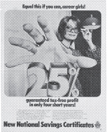
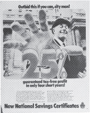
Reklamın dayandığı temel huzursuzluk şu korkudan doğar: Hiçbir şeyin yoksa sen de bir hiç olursun.
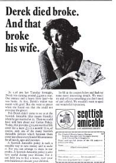
Para yaşamdır. Parasız açlıktan öleceksiniz demek değildir bu. Anamalın insana, başka bir sınıfın tüm yaşamı üzerinde egemenlik sağlaması demek de değildir. Paranın her türlü insan yeteneğini gösteren bir şey, bunlara giden yolu açan bir anahtar olması demektir. Para harcama gücü, yaşama gücüyle bir tutulur. Reklamlarda anlatılan masallara bakılırsa, para harcama gücü olmayanları gerçekten kimse sevmez. Para harcama gücü olanlarsa sevilir.
Her türlü ürünü ya da hizmeti satabilmek amacıyla reklamlarda cinselliğe gittikçe daha çok başvuruluyor. Ne var ki bu cinsellik hiçbir zaman kendi başına, özgür bir cinsellik değildir. Cinsellikten daha büyük bir şeyin, yaşarken istediğimiz her şeyi ele geçirebileceğimiz güzel bir yaşamın simgesidir. Satın alabilecek durumda olmak cinsel bakımdan istenir olmakla eşitlenir. Bazan bu yukardaki Barclays Bankası reklamında gördüğümümüz gibi apaçık verilen bir mesajdır. Ama çoğu zaman gizlenir mesaj: bu ürünü satın alabiliyorsanız sevilen birisi olacaksınız. Alamıyorsanız sevilmeyeceksiniz.
Reklam açısından şimdi, tanımı gereği yetersiz kalır. Yağlıboya resimler geleceğe kalacak kayıtlar olarak düşünülmüştü. Bir resmin sahibine verdiği zevkte biraz da kendisinin o zamanki imgesini gelecekteki çocuklarına götüreceği umudu yatıyordu. Bu yüzden yağlıboya resimde şimdiki zaman resme geçiriliyordu. Ressam gerçekten olsun, imgeleminden olsun, önünde olanları resmediyordu. Geçici olan reklam imgesindeyse yalnızca gelecek zaman kullanılır. Bu nesneyle çekici olacaksınız. Bu çevrede tüm ilişkileriniz mutlu, pırıl pırıl olacak.
Büyük ölçüde işçi sınıfına seslenen reklamlarda, satılan özel ürünün kişiyi baştan aşağıya değiştireceğinden söz edilir (Külkedisi); orta sınıfa yönelen reklamlardaysa bir ürünler dizisiyle yaratılacak genel havanın içinde doğacak değişik ilişkiler vurgulanır. (Büyülü Saray).
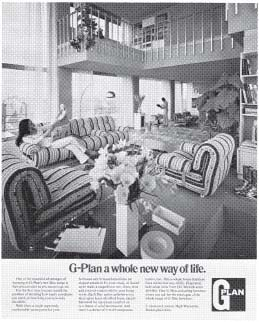
Reklamlarda gelecek zamanla konuşulur, oysa geleceğe ulaşma anı sürekli olarak ertelenir durur. Öyleyse nasıl oluyor da inanılır — ya da yaptığı etkiyi sürdürecek ölçüde inanılır — olabiliyor reklamlar. Reklamlar inanılır oluyor çünkü burada söylenenlerin doğruluğu, söz verilen şeylerin gerçekleşebilirliğinden değil, uyandırdığı düşlerin seyirci alıcının düşleriyle çakışmasından doğuyor. Reklam temelde gerçeğe değil, düşlere dayanıyor.
Bunu daha iyi anlamak için çekicilik kavramına dönmemiz gerekir.
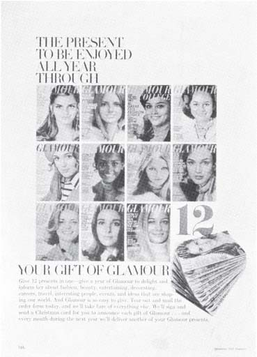
Çekicilik çağımızda yaratılmış bir şeydir. Yağlıboya resmin çok tutulduğu zamanlarda çekicilik diye bir kavram yoktu. İncelik, şıklık, güçlülük gibi nitelikler buna benzeyen ama temelde çok değişik bir şey oluşturuyordu.
BAYAN SIDDONS, GAINSBOROUGH 1727–1788
Burada Gainsborough’nun yorumuyla gösterilen Bayan Siddons’ın imgesi çekici değildir; çünkü kıskanılacak birisi, bu nedenle mutlu birisi olarak sunulmuyor bize. Bayan Siddons zengin, güzel, yetenekli, talihli bir kadın olarak görülebilir. Ama bu nitelikler onun kendisinindir; böylece kabul edilmiştir. Bayan Siddons’ın burada yansıtılan durumu başkalarını ona benzemeye kışkırtmak için yaratılmış bir durum değildir. Başkalarının kıskançlığını körüklemek için yaratılmış bir karikatür imgesi değildir o — oysa Andy Warhol Marilyn Monroe’yu böyle kullanmıştır.
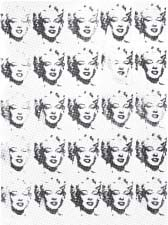
MARILYN MONROE, ANDY WARHOL
Çekicilik, kişisel ve toplumsal kıskançlığın ortak, yaygın bir duygu olarak ortaya çıkmasından önce yaratılmazdı. Demokrasiyi amaçlayan, ama yarıyolda kalan sanayi toplumu böyle bir duygunun yaratılabileceği bulunmaz bir ortamdır. Kişisel mutluluk peşinde koşmak, evrensel olarak herkesçe kabul edilmiş bir haktır. Oysa günümüzdeki toplumsal koşullar bireyin kendisini güçsüz hissetmesine yol açıyor. Birey, içinde bulunduğu durumla olmak istediği durum arasındaki çelişkiyi her gün yeniden yaşıyor. O zaman da ya bu çelişkinin iyice bilincine vararak, başka şeylerle birlikte anamalcı düzeni devirerek tam demokrasiyi gerçekleştirme yolunda siyasal kavgaya katılıyor ya da kendi güçsüzlük duygusuyla beslenen kıskançlık duygusunun pençesinde hiç bitmeyen düşlere kapılarak yaşıyor.
İşte reklamların nasıl olup da hala inanılabilirliklerini koruduklarını anlamamıza yardım edecek şey budur. Reklamın aslında sunduklarıyla sözünü ettiği gelecek arasındaki uçurum seyirci alıcının içinde bulunduğu durumla olmak istediği durum arasındaki uçurumla çakışır. İki uçurum üst üste gelir, birleşir; etkinlikle ya da gerçek yaşantılarla kapatılmak yerine bu uçurum, çekicilik düşleriyle doldurulmağa çalışılır.
Çalışma koşulları da çoğu zaman buna kapılmaya iter insanları.
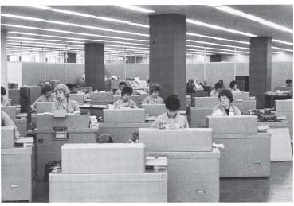
İş saatlerinin anlamsız, sonugelmez sürgitliği, düşlenen bir gelecekle ‘dengelenir’; gelecekte girişilecek düşsel etkinlikler o andaki edilginliğin yerini doldurur. O kadın ya da erkek işçi, düşlerinde gerçek tüketici olur. Çalışan ben, tüketen beni, kıskanır.
Düşlerin hiçbiri öbürüne uymaz. Bazıları anlıktır, bazıları uzaklara yönelir. Düş her zaman kurana özgü bir şeydir. Reklam düş üretmez. Reklamın yaptığı yalnızca, bize kıskanılır duruma daha gelmediğimizi — ama gelebileceğimizi — söylemektİr.
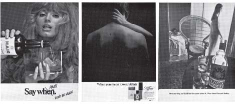
Reklamın başka bir önemli toplumsal işlevi daha vardır. Reklamları hazırlayanların, kullananların bu işlevi bir amaç olarak önceden tasarlamamış olmaları önemini azaltmaz. Reklamcılık, tüketimi demokrasinin yerine geçen bir şeye dönüştürmüştür. İnsanın yiyeceklerini (giysilerini, arabasını) seçmesi çok önemli siyasal seçmenin yerine geçmektedir. Reklam toplumda demokratik olmayan her şeyi örtbas etmeye, bu eksikliklerin bedelini ödemeye de yardım eder. Üstelik dünyanın geri kalan kesiminde yer alan olayları da gözlerden siler.
Reklam, bir tür düşünsel dizge olup çıkar sonunda. Her şeyi kendi diliyle açıklar. Dünyayı yorumlar.
Tüm dünya reklamlarda sözü edilen güzel yaşamın gerçekleştirebileceği yer olarak sunulur. Dünya bize gülümser. Kendini sunar bize. Ne var ki her yer kendini bize böyle cömertçe sunduğundan, bu yerlerin hepsi birbirinin aynı olup çıkar sonunda.
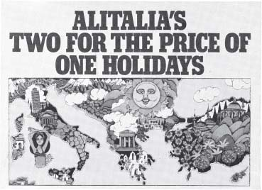
Reklamlara bakılırsa üstün olmak demek çatışmalardan uzakta olmak demektir.
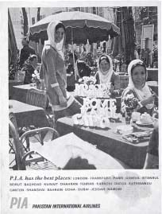
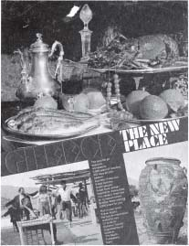
Reklamlarda devrim bile reklam diline dönüştürülur.
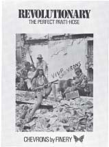
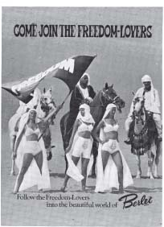
Reklamların dünyayı yorumlayışıyla dünyanın aslında içinde bulunduğu durum arasındaki uyuşmazlık apaçık ortadadır. Bu uyuşmazlık zaman zaman, haber öyküleri yayınlanan renkli dergilerde açıkça görülür. Arkada böyle bir derginin iç sayfalarından biri görülüyor.
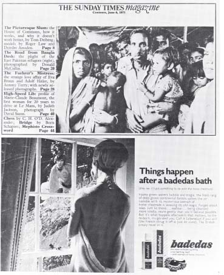
Böylesi bir uyuşmazlığın yarattığı sarsıntı oldukça büyüktür. Gösterilen iki dünyanın birarada gerçekten var olmalarından değil bunları altalta koyan ekinin aldırmazlığından geliyor bu sarsıntı. Bu uyuşmazlığın yanyana istenerek getirilmediği söylenebilir. Gene de metin, Pakistan’da çekilen resimler, derginin düzenlenişi, reklamın simgelenişi, ikisinin birarada basılışı, reklamcıya ayrılan sayfalarla haber sayfalarının birbirinden ayrılmaması — bütün bunlar aynı ekinin işidir.
Bununla birlikte burada üzerinde durulması gereken şey, uyuşmazlığın yarattığı ahlâksal sarsıntı değildir. Bu sarsıntıyı hesaplamak reklamı verenlerin kendilerine düşer. Haftalık Reklam Dergisi’nde (3 Mart 1972), haber dergilerinde ortaya çıkabilecek böyle tatsız uyuşmazlıkların tecimsel açıdan ne denli tehlikeli olabileceğinin farkına varan bazı reklamcıların daha az çarpıcı, daha gölgeli, renkliden çok siyah beyaz imgeler kullanmaya karar verdikleri yazılıyor. Burada bizi ilgilendiren şey, böylesi uyuşmazlıkların reklamların gerçek niteliği konusunda bize söyledikleridir.
Reklam temelde olaysızdır. Reklam, hiç bir şeyin olmayacağı ölü bir noktaya dayanabilir. Reklamlarda, gerçek olayların tümü olağanüstü olaylardır ve yalnızca yabancıların başından geçer. Bangladeş fotoğraflarındaysa yaşanan olaylar acıdır, ama uzakta olmuştur. Oysa bu olaylar yakında bir yerde, Derry ya da Birmingham’da olsaydı uyuşmazlık çarpıcılığını gene yitirmeyecekti. Uyuşmazlık olayların acı olmasından da kaynaklanmıyor. Yaşanan olaylar acıysa, bu bizi uyuşmazlığa karşı daha da uyarır. Oysa olaylar neşeli olsaydı, doğrudan, kalıplaştırılmadan verilseydi, uyuşmazlık gene de büyük ölçüde çarpıcı olacaktı.
Sürekli bizden kaçan bir geleceğin içine yerleştirilen reklam, şimdi’yi ortadan kaldırır; tüm olayları, tüm gelişmeyi yok eder. Reklam içinde yaşantı olanaksızdır. Ne oluyorsa hepsi dışarda bir yerde olur.
Dokunabilirliği kendi başına olaylaştıran bir dil kullanmasa, aslında reklamın olaysızlığı hemen görülebilirdi. Reklamlarda gösterilen her şey oradadır; yalnızca ele geçirilmeyi bekler. Ele geçirme eylemi bütün öbür etkinliklerin yerini almıştır; sahibolma duygusu bütün öbür duyguları silip götürmüştür.
Reklamın korkunç bir etkileme gücü vardır; reklam aynı zamanda çok önemli bir siyasal olgudur. Oysa reklamın ulaşma alanı geniş olsa da sundukları sınırlıdır. Reklam ele geçirme gücünden, başka güç tanımaz. Bütün öbür insan yetileri ya da gereksinmeleri bu gücün buyruğuna verilmiştir. Tüm umutlar toplanmış, birbirine uydurulmuş, yalınlaştırılmıştır; sonunda yoğun ama belirsiz, büyülü ama yinelenebilir bir umut sunulur her ürünle birlikte. Anamalcılık ekini içinde başka hiç bir umut, doyum ya da zevk türü düşünülemez olur artık.
Reklam bu ekinin yaşamıdır —öyle ki anamalcılık onsuz varlığını sürdüremez— ve aynı zamanda bu ekinin ürünüdür de.
Anamalcılık sömürdüğü çoğunluğu, isteklerini çok sınırlı bir biçimde tanımlamaya zorlayarak sürdürür varlığını. Bir zamanlar bu sonuç çok yaygın bir yoksullukla sağlanıyordu. Bugünse gelişmiş ülkelerde halka istenecek, istenmeyecek şeylerin ne olduğunu, yanlış ölçütleri zorla kabul ettirerek yapılıyor.